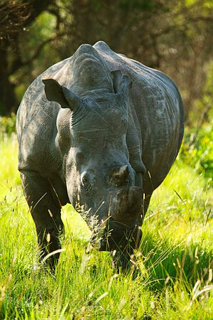

tê giác nâu

tê giác trắng
tổng quát
Tê giác là các loài động vật nằm trong số 5 chi còn sống sót của động vật guốc lẻ trong họ Rhinocerotidae. Tất cả năm chi nói trên đều có nguồn gốc ở châu Phi hay châu Á. Đặc trưng nổi bật của động vật có sừng này là lớp da bảo vệ của chúng được tạo thành từ các lớp chất keo với độ dày tối ưu khoảng 4 inch được sắp xếp theo cấu trúc mắt lưới.
ảnh minh họa
tê giác nâu
tê giác trắng